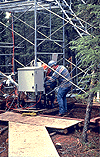

The southern Old Black Spruce site was equipped with a 25 meter double-scaffold tower (with internal steps) extending 5 m above the forest canopy. Screw anchors for tower foundations and guy-wire anchors had to be drilled into the mineral soil beneath a one-meter deep mat of sphagnum moss. View an aerial photo-map of the SSA-OBS site.
 Location of the SSA within Canada. |
Location of the Old Black Spruce site within the SSA. |
Map of the Southern Study Area Old Black Spruce site. | |
| SSA Old Black Spruce Flux Tower also called SSA-OBS-FLXTR (click here for detailed info) |
||
| Latitude: 53.98717 | UTM Easting: 492276.5 | BOREAS X: 385.012 |
| Longitude: -105.11779 | UTM Northing: 5982100.5 | BOREAS Y: 348.646 |
| Elevation (ASL): 628.94 m | UTM Zone: 13 | |
The 1.3 km road and boardwalk from OBS (facing North) |
 The ARGO ATV used to haul equipment to OBS |
The double-scaffold flux tower |
 The control box at the base of the flux tower |
The hut and boardwalk |
The TE canopy tower |
 A CO2 flux chamber instrument at SSA-OBS |
The ground cover at OBS |
Related Pages:
 BOREAS Home
BOREAS Home
 Study Region Overview
Study Region Overview
 Southern Study Area (SSA)
Southern Study Area (SSA)
 SSA Old Black Spruce Site (SSA-OBS)
SSA Old Black Spruce Site (SSA-OBS)
 NSA Old Black Spruce Site (NSA-OBS)
NSA Old Black Spruce Site (NSA-OBS)
Revison Date: January 25, 1999
{kind=link}
{kind=link}
{kind=link}
{kind=link}
{kind=link}
{kind=link}
{kind=link}